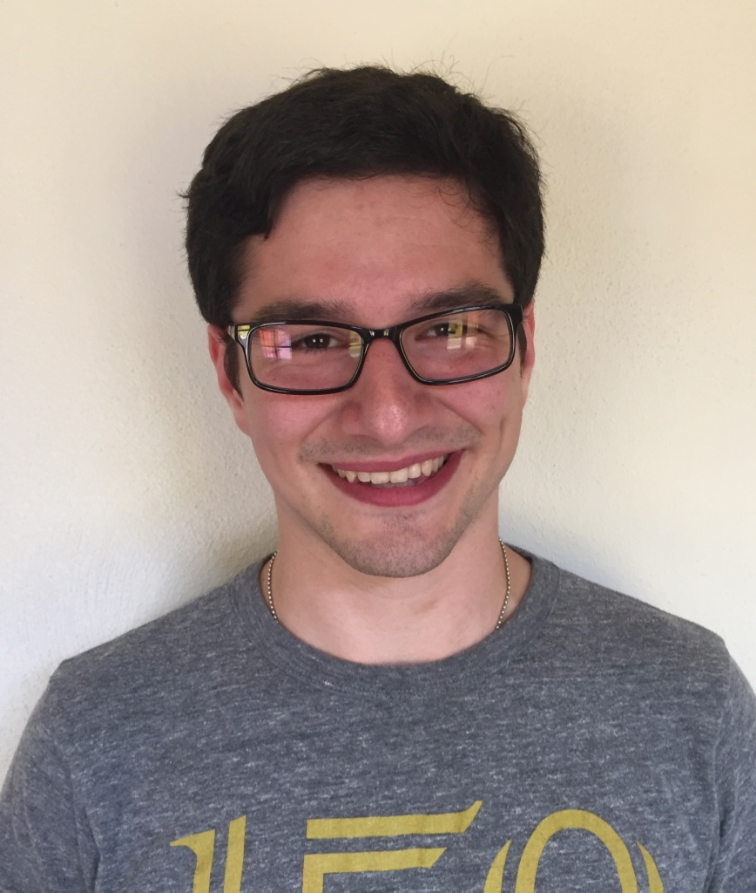

Hello, I am David Garavito, an Assistant Professor at the University of Washington School of Law. I received my M.A. and Ph.D. in Human Development from Cornell University as part of Valerie Reyna's Laboratory for Rational Decision Making. I also received a J.D. from Cornell Law School. I completed my post-doctoral training as an Interprofessional Polytrauma & Traumatic Brain Injury Rehabilitation Research Fellow for the Department of Veterans Affairs under the supervision of Jim Bjork. My research interests primarily lie in criminal law and procedure, developmental cognition, and neuroscience, with my main focus on judgment and decision making in legal and public health contexts. My research examines the perception of risks and decision making within various contexts (parole outcomes, sports, substance use, vaccination, etc.) and the cognitive and neural effects of concussive and sub-concussive injuries. I also conduct research on memory across the lifespan to detext the prevalence of semantic false memories, and I am using advanced models and theory to detect the development and progression of possible neurodegenerative diseases in at-risk populations. As a graduate of Cornell Law School and a New York attorney, my legal experience has provided me with the insight to write on legal and policy matters relating to criminal law, human development, race and socioeconomic status, and the application of psychology and neuroscience. I have published articles in the Cornell Journal of Law & Public Policy and the American Criminal Law Review on such topics, and I am currently writing several manuscripts on contemporary issues in law and technology, specifically as they affect children and their development. Lastly, I am a developer of python-based programs, the best example if which is TaskMaster, a free and open-source application that can run psychological tasks on Mac and Windows computers. To contact me via social media or email, or to view my curriculum vitae, please check the bottom of the page.